集合与线性结构
散列表
线性表
线性表（Linear List）简称表，是具有相同类型的数据元素的有限序列，线性表中数据元素的个数称为线性表的长度。长度等于0时称为空表，线性表每个元素按顺序编号（从1开始），称为位置或序号。一个元素的前一个元素称为该元素的前驱，后一个元素称为该元素的后继，第一个元素没有前驱，最后一个元素没有后继，其它元素只有一个前驱和一个后继。
顺序表
线性表的顺序存储结构称为顺序表（Sequential List），有些地方把顺序表简单称为数组，这是由于顺序表采用数组存储，因此其在删除和插入等操作较为麻烦，而查询和更新等操作却方便。顺序表中数据元素的存储地址是其序号的线性函数，只要确定了存储顺序的起始地址（基地址），计算任意一个元素的存储地址的时间是想等的，具有这一特点的存储结构称为随机存取结构。顺序存取结构是一种按地址的逻辑顺序进行读、写操作的存取方法。其特点是存取时间与数据所在的物理地址有关，在存取第N个数据时，必须先访问前N-1个数据。
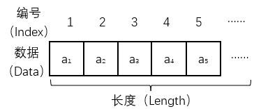
顺序表ADT
顺序表本质上还是在对一个数组操作，使用的是静态存储分配。静态存储分配是指在编译时为变量分配内存，并且一经分配就始终占有固定的存储单元，直到该变量退出其作用域。动态存储分配是指在程序运行期间根据实际需要随时申请内存，并在不需要时释放。为了克服顺序表的缺点，采用动态存储分配来存储线性表，即使用链接存储结构。
链表
链表（Linked List）是用一组任意的存储单元存放线性表的元素，这组存储单元可以连续也可以不连续，为了能正确表示元素之间的逻辑关系，每个存储单元在存储数据的同时，还必须存储其后继元素所在的地址信息，这个地址信息称为指针，这两部分组成了数据元素的存储映像，称为结点。
单链表
单链表（Singly Linked List）中包含数据域和指针域，数据域用于存放数据，指针域中含有一个next指针，用于链接当前结点和下一个结点。
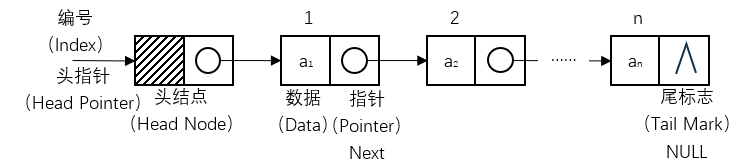
单链表ADT
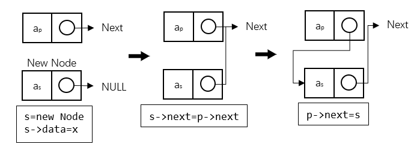
单链表插入算法
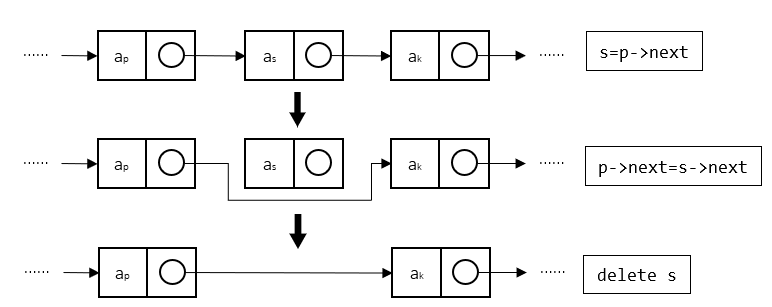
单链表删除算法
循环链表
在单链表中，如果将终端结点的指针域由空指针改为指向头结点，就使整个单链表形成一个环，这种头尾相接的单链表称为循环单链表，简称循环链表（Circular Linked List）。循环链表的操作方式和单链表相差无几。
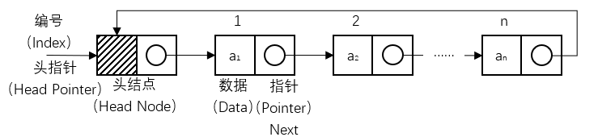
循环链表ADT
双链表
在循环链表中，虽然从任一结点出发可以扫描到其它结点，但要找到其前驱结点，则需要遍历整个循环列表。如果希望快速确定表中任一结点的前驱结点，可以在单链表的每个结点中再设置一个指向其前驱结点的指针域，这样就形成了双向循环链表，简称双链表（Doubly Linked List）。
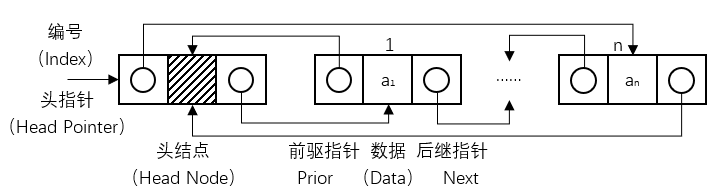
双链表ADT
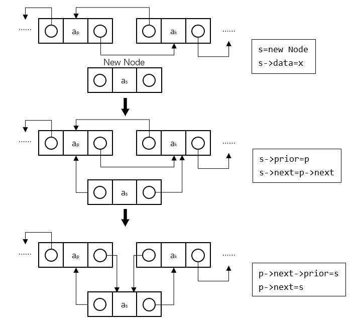
双链表插入算法
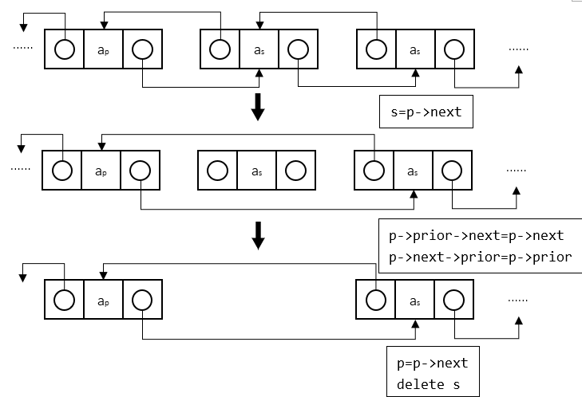
双链表删除算法
异或链表
在双链表中，指针域需要两个指针的空间来存储，可以通过利用按位异或的值，仅使用一个指针的内存大小便可以实现双链表的功能，这种链表就是异或链表（XOR Linked List）。异或链表本质上还是双链表，操作方式也相差无几，只是获取前驱或者后继指针时需要进行异或运算。
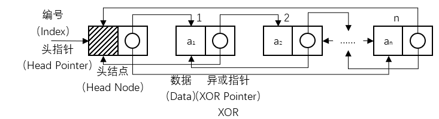
异或链表ADT
在异或链表中满足：
静态链表
静态链表（Static Linked List）是用数组来表示单链表，用数组元素的下标来模拟单链表的指针。由于它是利用数组定义的，属于静态存储分配，因此称为静态链表。
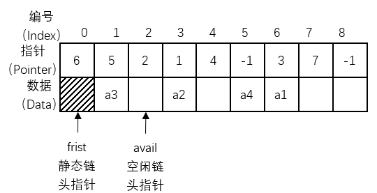
静态链表ADT
| 线性表 | 存储结构 | 结点指针 | 公共指针 |
|---|---|---|---|
| 顺序表 | 顺序 | 无 | 无 |
| 单链表 | 链接 | Next（后继指针） | First（头指针） |
| 循环链表 | 链接 | Next（后继指针） | First（头指针） Rear（尾指针）（可选） |
| 双链表 | 链接 | Prior（前驱指针） Next（后继指针） |
First（头指针） Rear（尾指针）（可选） |
| 异或链表 | 链接 | XOR（异或指针） | First（头指针） Rear（尾指针）（可选） |
| 静态链表 | 顺序 | 无 | First（静态链头指针） avail（空闲链头指针） |
常用线性表对比
栈与队列
栈
栈（Stack）是限定仅在表尾进行插入和删除操作的线性表，允许插入和删除的一端称为栈顶，另一端称为栈底，不含任何数据元素的栈称为空栈。对于栈而言，把插入操作称为入栈或压栈（Push），把删除操作称为出栈或弹栈（Pop）。栈有着后进入栈的元素先出栈的原则，称为后进先出（last in first out，LIFO）。
顺序栈
栈的顺序存储结构称为顺序栈（Sequential Stack），本质上就是顺序表的简化，对原有的顺序表进行了限定，指定了数组的哪一端表示栈底，通常把数组下标为0的一端作为栈底，同时附设一个栈顶指针指定栈顶元素。
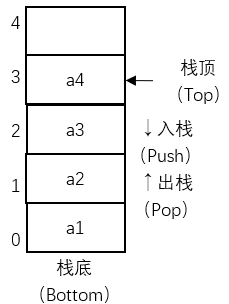
顺序栈ADT
两栈共享空间
在一个栈未满时，往往会有多余的空间，如果两个栈的数据量处于此消彼长或其它需求时可以通过两栈共享空间（Both Stack）的办法实现对空间的合理利用。
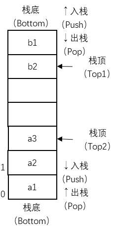
两栈共享空间ADT
链栈
栈的链接存储结构称为链栈（Linked Stack）。与顺序栈类似，本质上也是对链栈的简化，操作固定在链表尾部（栈顶），也不需要头指针和头结点的定义。
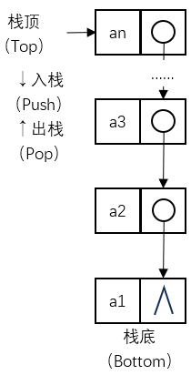
链栈ADT
队列
队列（Queue）是只允许在一端进行插入操作（队尾），在另一端进行删除操作（队头）的线性表，不含任何数据元素的队列称为空队列。对于队列而言，把插入操作称为入队，把删除操作称为出队。队列有着先进入队的元素先出队的原则，称为先进先出（first in first out，FIFO）。
顺序队列
队列的顺序存储结构称为顺序队列（Sequential Stack），本质上就是顺序表的简化，对原有的顺序表进行了限定，指定了数组的哪一端表示队头，哪一端表示队尾。需要附设指向队头和队尾的指针。在进行入队和出队的操作时，只需要移动指针即可。
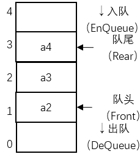
顺序队列ADT
循环队列
顺序队列建立后，随着队列的插入和删除操作的进行，整个队列会逐渐向着数组末尾移动，从而产生了队列的“单向移动性”。当元素被插入到数组中下标最大的位置上之后，队列的空间就用尽了，尽管此时数组的低端还有空闲空间，这种现象称为“假溢出”。为了解决这个问题，把顺序队列的头尾相接，形成循环队列（Circular Stack）。
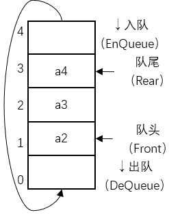
循环队列ADT
两栈模拟队列
两栈模拟队列（Both Stack Queue）是一种特殊的顺序队列，通过两个栈来实现一个队列的功能，一个栈称为入队栈，仅用于入队（入栈），另一个栈称为出队栈，仅用于出队（出栈）。当需要入队时，在入队栈进行入栈；当需要出队时，判断出队栈是否为空，如果不为空，则在出队栈进行出栈，如果为空，则将入队栈和出队栈互换位置，再进行出队。如果两栈都为空，则队列为空。
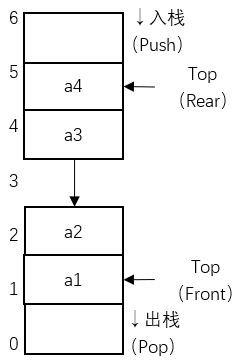
两栈模拟队列ADT
双端队列
双端队列（Double-Ended Queue，Deque）也是一种特殊的队列，双端队列是指一个可以在队首和队尾都可以插入或删除元素的队列，相当于是栈与队列功能的结合。类似的，也可以用两栈来模拟双端队列。
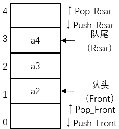
双端队列ADT
链队列
队列的链接存储结构称为链队列（Linked Stack），链队列是对单链表的基础上进行了简单的修改，拥有头指针（指向头结点）和尾指针（指向终端结点）。
链队列ADT